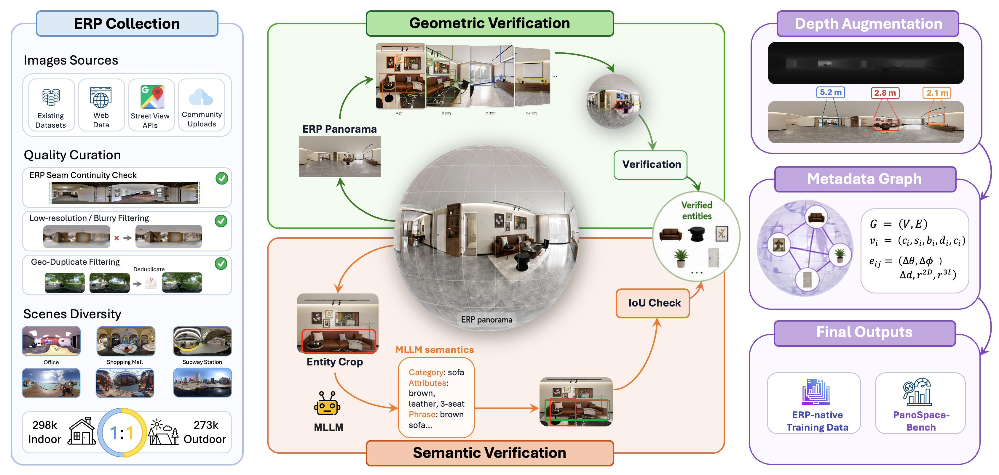
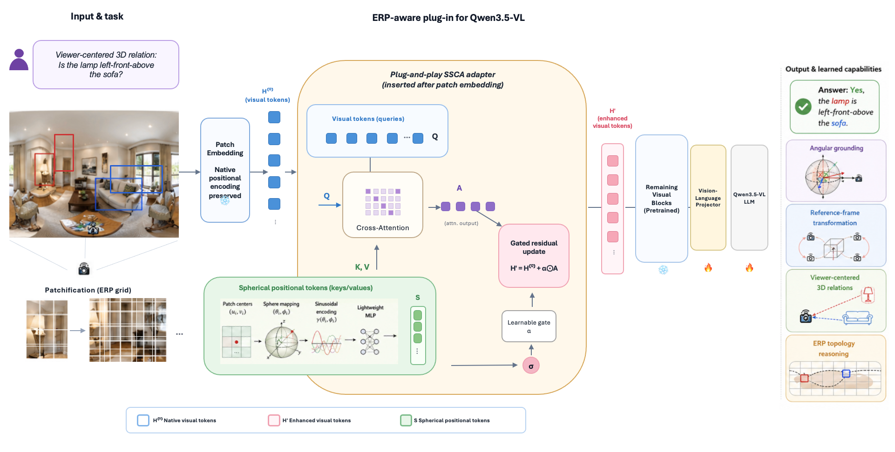
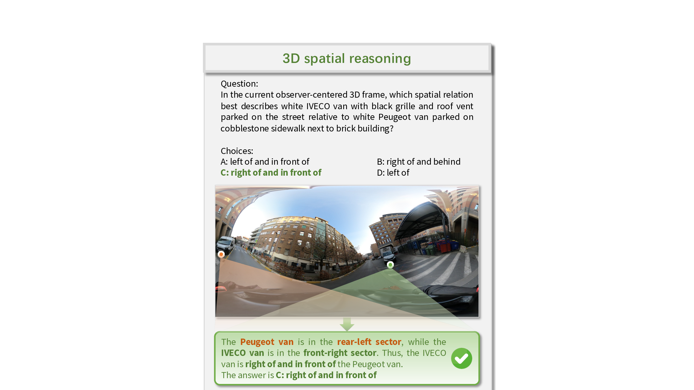
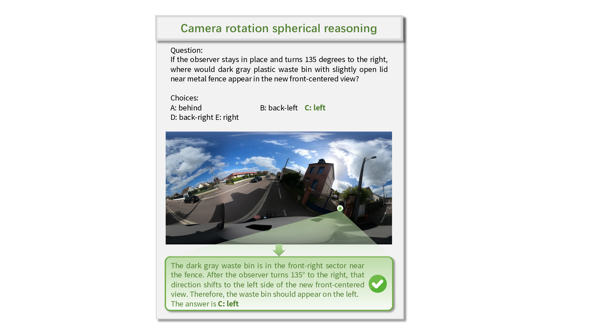
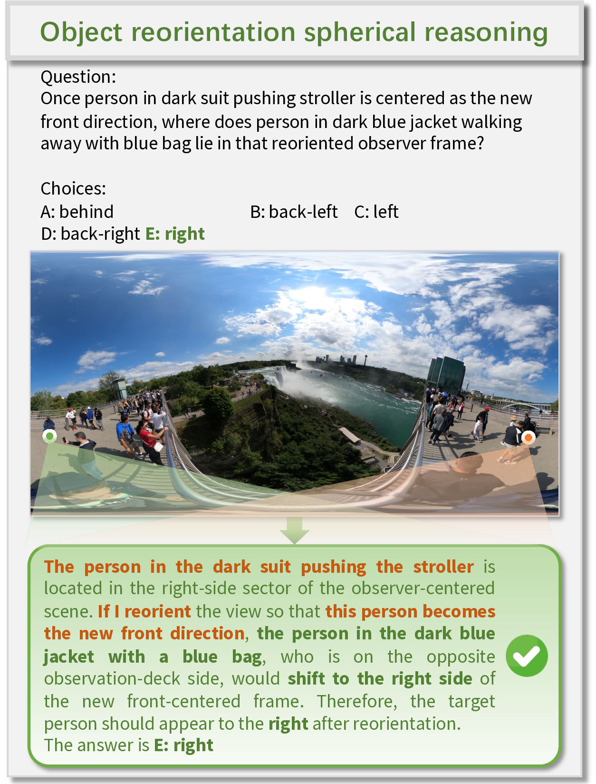
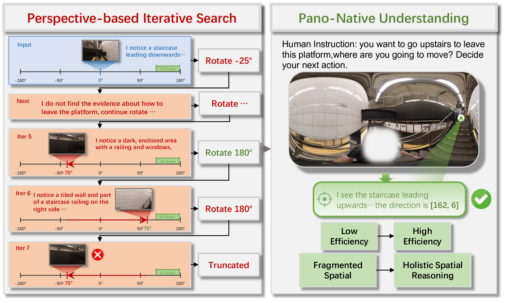
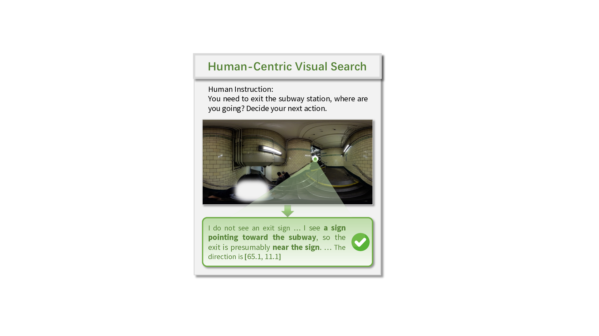
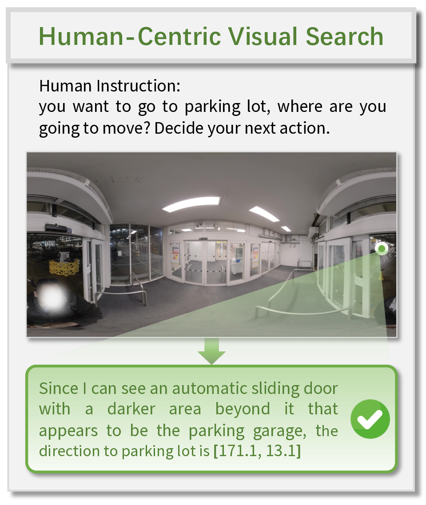

Pano-Native Ability Foundation
We formalize the core abilities required for panoramic understanding: semantic anchoring, spherical localization, reference-frame transformation, and depth-aware 3D spatial reasoning over observer-centered ERP space.

Multimodal large language models still struggle with spatial understanding under the dominant perspective-image paradigm, which inherits the narrow field of view of human-like perception. For navigation, robotic search, and 3D scene understanding, 360° panoramic sensing offers a form of supersensing by capturing the entire surrounding environment at once. However, existing MLLM pipelines typically decompose panoramas into multiple perspective views, leaving the spherical structure of equirectangular projection (ERP) largely implicit.
In this paper, we study pano-native understanding, which requires an MLLM to reason over an ERP panorama as a continuous, observer-centered space. We define key abilities for pano-native understanding, build a large-scale metadata construction pipeline that converts mixed-source ERP panoramas into geometry-aware, language-grounded, and depth-aware supervision, and introduce PanoWorld with Spherical Spatial Cross-Attention. We further construct PanoSpace-Bench, a diagnostic benchmark for evaluating ERP-native spatial reasoning. Experiments show that PanoWorld substantially outperforms proprietary and open-source baselines on PanoSpace-Bench, H*Bench, and R2R-CE Val-Unseen benchmarks.
We formalize the core abilities required for panoramic understanding: semantic anchoring, spherical localization, reference-frame transformation, and depth-aware 3D spatial reasoning over observer-centered ERP space.
A metadata-driven construction pipeline converts mixed-source panoramas into geometry-aware, language-grounded, and depth-aware supervision through geometric and semantic verification.
A benchmark designed for ERP-native spatial reasoning, measuring spherical grounding, reference-frame transformation, 3D relations, seam continuity, and topology-sensitive understanding.
PanoWorld injects spherical geometry into the visual stream via Spherical Spatial Cross-Attention, enabling pano-aware reasoning while preserving the pretrained vision-language backbone.
PanoWorld combines a large-scale training resource with a benchmark designed specifically for ERP-native spatial reasoning.

| Resource | Panoramas | Depth / 3D | Entity Metadata | Scalable Annotation | Verified Graph |
|---|---|---|---|---|---|
| Dense360 | 160K | No | Yes | Yes | Partial |
| OSR-Bench | 4.1K | Partial | Partial | No | No |
| PanoEnv | 595 | Yes | Partial | No | No |
| PanoWorld | 570K | Yes | Yes | Yes | Yes |
PanoWorld adapts Qwen3.5-VL into a pano-aware MLLM by injecting spherical geometry into the visual stream before deep visual encoding.

PanoWorld substantially improves panoramic spatial reasoning on the proposed benchmark and transfers to downstream panoramic and navigation tasks.
vs. 30.8 for the Qwen3.5-9B panoramic baseline.
with H* SFT, improving holistic object and position sensing.
stronger panoramic navigation transfer on Val-Unseen.
better path efficiency while preserving high navigation success.
ERP-native spatial reasoning across spherical localization, 3D relations, and seam-aware perception.
| Method | Overall | Abs. Dir. | BFOV | Spherical Relation Avg. | 3D Spatial Avg. | Seam |
|---|---|---|---|---|---|---|
| GPT-4o | 31.8 | 37.2 | 17.7 | 29.3 | 36.4 | 37.6 |
| Mimo-v2.5 | 37.2 | 26.8 | 0.74 | 42.3 | 37.6 | 45.6 |
| Qwen3.5-9B | 30.8 | 25.2 | 1.41 | 26.1 | 36.9 | 41.2 |
| Qwen3.5-9B + visual prompt | 36.4 | 55.2 | 4.9 | 33.1 | 36.1 | 46.5 |
| PanoWorld | 56.5 | 93.7 | 73.3 | 47.4 | 49.8 | 65.5 |
Holistic panorama sensing under both perspective-view and ERP panorama evaluation settings.
| Method | Overall | HOS | HPS | Yaw | Pitch |
|---|---|---|---|---|---|
| GPT-4o ERP | 30.1 | 39.1 | 17.1 | 38.5 | 64.2 |
| Gemini-2.5-Pro ERP | 46.9 | 55.3 | 34.3 | 52.5 | 71.6 |
| Qwen3.5-9B ERP | 19.4 | 26.2 | 9.3 | 23.5 | 46.5 |
| Qwen3.5 + visual prompt | 40.4 | 46.0 | 32.0 | 43.5 | 52.0 |
| PanoWorld + H* SFT | 70.1 | 73.1 | 64.2 | 74.1 | 85.5 |
R2R-CE Val-Unseen results show that pano-native visual representations transfer to embodied navigation.
| Method | NE ↓ | OSR ↑ | SR ↑ | SPL ↑ |
|---|---|---|---|---|
| HPN + DN | 6.31 | 40.0 | 36.0 | 34.0 |
| GridMM | 5.11 | 61.0 | 49.0 | 41.0 |
| StreamVLN | 5.73 | 56.4 | 50.2 | 47.1 |
| NaVIDA | 5.72 | 57.4 | 47.7 | 41.5 |
| PanoWorld-VLN | 4.98 | 59.3 | 54.3 | 52.1 |
Qualitative examples across PanoSpace-Bench, H*Bench, and navigation show how pano-native learning supports localization, holistic sensing, and embodied transfer.
The benchmark probes spherical localization, 3D spatial relations, viewpoint transformation, and object reorientation.



H*Bench examples test holistic object sensing and holistic position sensing on panoramic scenes.



Compared with RGB perspective-view navigation, panoramic input gives the agent full-surround context at each step. This reduces blind-spot exploration and helps ground instructions in global scene layout.
@article{panoworld2026,
title = {PanoWorld: Towards Spatial Supersensing in 360° Panorama World},
author = {Wang, Changpeng and Lin, Xin and Liu, Junhan and Liu, Yuheng and Wang, Zhen and Qi, Donglian and Yan, Yunfeng and Chen, Xi},
journal = {arXiv preprint arXiv:2605.13169},
year = {2026}
}